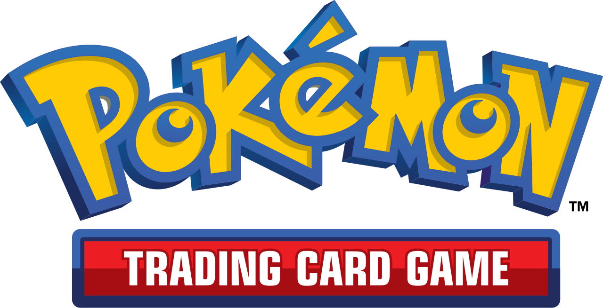
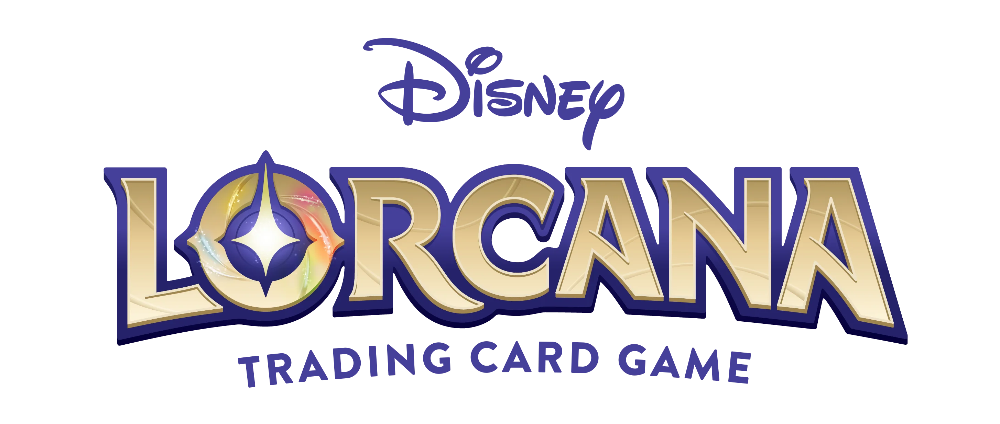

PodFinder
Trouve ta table, pas juste des joueurs.
Palette
Typographie
Display / Geist Sans 800
On se retrouve ce soir ?
Body / Geist Sans 400
Commander, Standard, EN LIGNE ou en personne — trouve un pod en quelques secondes.
Data / Geist Mono 500
3/4 JOUEURS · PARIS · CE SOIR 20H
Jeux supportés
 Magic: The Gathering
Magic: The Gathering
Pokémon TCG
Disney LorcanaOne Piece TCG
Signature
Le socket
Le "o" de Pod devient une prise arrondie — le geste de deux joueurs qui s'emboîtent. Le point ambre au centre marque l'instant du match : la seule étincelle sur un fond sombre et discret. Cette forme sert de repère visuel dans la vidéo (zoom sur les moments de match) et sur les visuels sociaux (couverture, badge "complet").